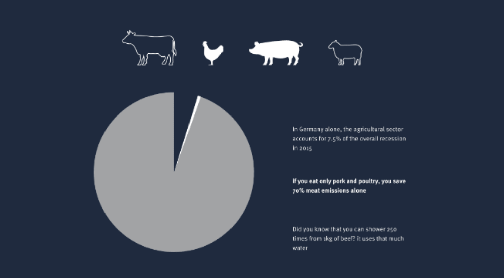
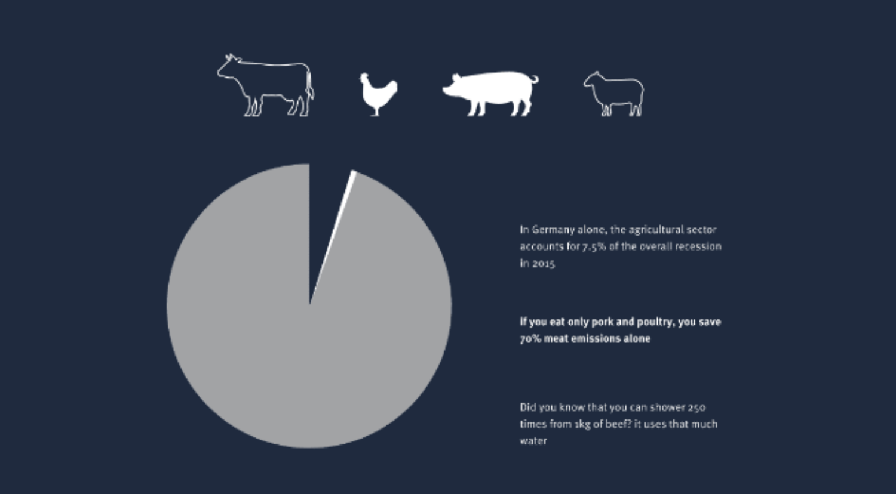

Since the UN Climate Change Conference in 2010, efforts have been made to limit global warming caused by greenhouse gases to only two degrees Celsius by the end of the century compared to the pre-industrial age. In the Paris Agreement of 2015, two degrees remains the goal, but the aim is to limit warming to only 1.5 degrees.
Thus many scientists believe that the changes caused by global warming will be just manageable. If the
earth warms up by more than these two degrees, researchers believe that drastic and irreversible
environmental changes will occur – heatwaves, droughts, floods, natural disasters and the extinction of species.
If no drastic measures will soon be taken , the temperature could already rise by 1.5 to 7.8 degrees Celsius by
the end of the century, depending on the scenario. Human activities have so far led to a global temperature
increase of 1.0 degrees Celsius compared to the pre-industrial age, the Intergovernmental Panel on Climate
Change (IPCC) declared at the beginning of October 2018.
So fast, decisive action by all countries is required, as global emissions of greenhouse gases
must be drastically reduced: In order not to exceed 1.5 degrees Celsius, CO2 emissions must be
reduced by at least 40 percent by 2030 compared to 2010 levels. By 2050, we have to be climate neutral.
And each of us can contribute to achieving this goal by reducing our personal C02 emissions.
What does meat have to do with climate change?
In short: intensive animal husbandry leads to CO2 emissions.
The whole thing is a concatenation of many factors. Animals need a lot of food until they
reach slaughterable age. The forage crops in turn need soil to grow. These soils are
originally pastureland and are converted into arable land by clearing. In the process, carbon
in form of CO2 is released into the air. Fertilizers are used to make the plants grow faster.
These chemicals consist among other things of animal excrements and can produce emissions in
the form of laughing gas. This may happen if the fertilizer is not used carefully.
Some animal species even produce emissions in the form of methane directly by excreting it
themselves, thus polluting the environment.
Did you know that methane is 25 times more harmful and nitrous oxide 350 times more harmful than CO2?
Furthermore, the stables of the animals need energy to be heated or lit. Depending on the type of electricity (green electricity or not) this point is more climate-friendly or more harmful. Another factor that is relevant when it comes to CO2 emissions is the transport of animals, meat and animal products. These are released into the air in the form of exhaust gases.
The rainforest also has a particularly important function here. It is also called the green lung of the planet and has a great influence on the global climate. It ensures that CO2 is converted into oxygen through photosynthesis. However, if more and more rainforest is cleared for fodder cultivation and animal grazing, it can decompose less CO2 and more CO2 rises into the atmosphere that was previously bound in the forests. So, you see, it all adds up to a lot...
What animals are we talking about exactly? →
We have focused on the four animal species most often mentioned in statistics and consumed around the world.
To make the visualization more understandable, we have formed superordinate groups of age and species, so that
we have come to the following pictograms:
Cattle: integrated here are cattle and cows of all ages, bred for meat production.
Excluded are dairy cows.
Pigs: representing pork.
Chicken: used as an umbrella term for poultry. Included are chickens, ducks,
turkeys and geese.
Sheep: includes goats and sheep of all ages, as these are very often combined in the statistics.
Icons →
Land use change: Aboveground changes in biomass due to deforestation, as well as underground changes in soil carbon
Agriculture: methane emissions from animals, emissions from fertilizers, manure and farm machinery
Animal feed: emissions from crop production and its processing into feed for farmed animals
Processing: Emissions from energy use in the process of converting raw agricultural products into final food items
Transport: Emissions from energy use in the transport of food items in-country and internationally
Retail: Emissions from energy use in refrigeration and other retail processes
Packaging: Emissions from the production of package materials, material transport and end-of-life disposal
Did you know that one kilogram of beef consumes almost 15,500 liters of water?
That is as much as 250 five-minute showers
The production of one kilogram of beef produces 60kg of methane.
To compare: 60 kg is the weight of 274 Mc Donald’s Big Macs.
Did you know that the edible proportion of beef in Germany is only 37% of 100%? This is about the same as if
you bake a cake, cut it into 8 equal pieces and throw 5 of them away.
Did you know that 1 kg of beef, when produced outside the EU, requires the equivalent of 49 square meters of
space? That is as much as a typical 1 room apartment in Germany. Only for 1 kilogram of beef instead of one person.
In addition to meat, one must of course not forget that dairy products such as butter, cheese, curd cheese
and milk also come from animals and therefore have a large CO2 impact. They are no less problematic compared meat.
90 percent of the fresh meat in Germany comes from livestock farms. A cow with over 220 kilograms has only 1.8
square meters to live. This is only the space of when you walk two steps forward and one to the side.
Did you know that not all regions are climate-friendly? Because feed that is often produced overseas and then
transported to various farms around the world.
So, it is possible that meat from Argentinean cattle, which live exclusively on pastureland, has a better
ecological balance sheet than regional beef from cattle that are only in the barn and that are fattened with
concentrated feed from overseas.
Did you know that meat from the region does not automatically have a better CO2 footprint?
It is not the distance from the production site and point of sale that is decisive, but the size of the company
and the efficiency with which it operates. Because even in our region our animals eat what is produced overseas
and then transported to various farms around the world.
Now what? → You want to know what you could do now? We collected some easy tips how you can change your lifestyle and at the same time make the world a better place. You can really make a difference!